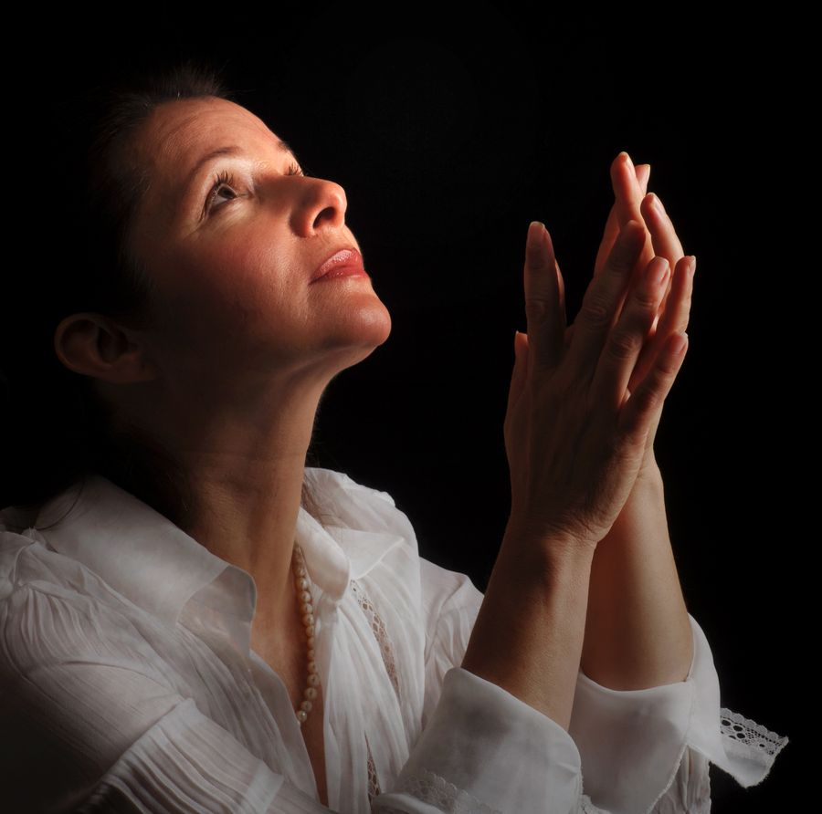
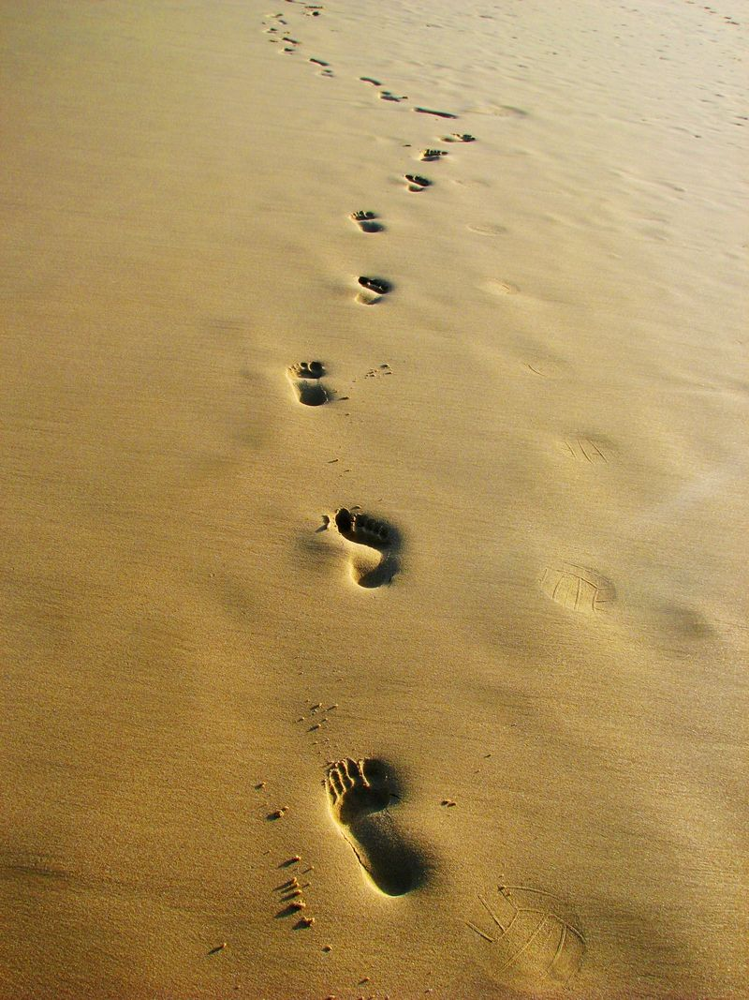
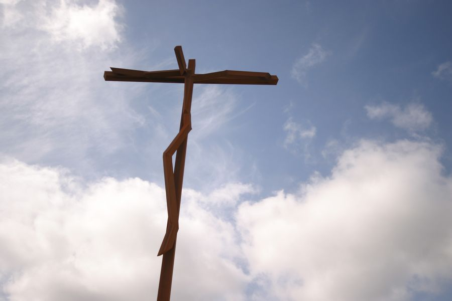
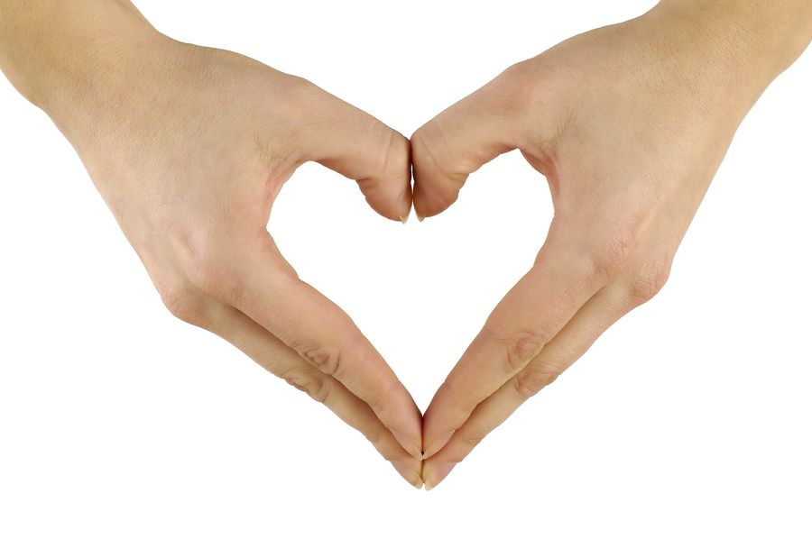

Un faro de esperanza y sanación
Ofrecemos acompañamiento terapéutico integral a personas que enfrentan dificultades emocionales, psicológicas y espirituales, en la región Centro-Occidente de México.
Escucha nuestra historia
Mira en poco más de un minuto quiénes somos, cómo acompañamos a cada persona y por qué hacemos lo que hacemos.
Nuestra misiónConoce Océano de Misericordia
Nuestra misión, la forma en que acompañamos a cada persona y cómo puedes sumarte.

Quiénes somos
Misión, visión, valores y el fundamento que inspira nuestro servicio.
Conocer más →
Servicios
Terapia individual, familiar y grupal, talleres y acompañamiento espiritual.
Ver servicios →
En vivo
Oraciones, charlas y talleres transmitidos para acompañarte desde casa.
Ver transmisión →
Cómo ayudar
Con un donativo o como voluntario haces posible que más personas sanen.
Sumarme →¿Necesitas acompañamiento?
Escríbenos y un miembro de nuestro equipo se pondrá en contacto contigo para orientarte.